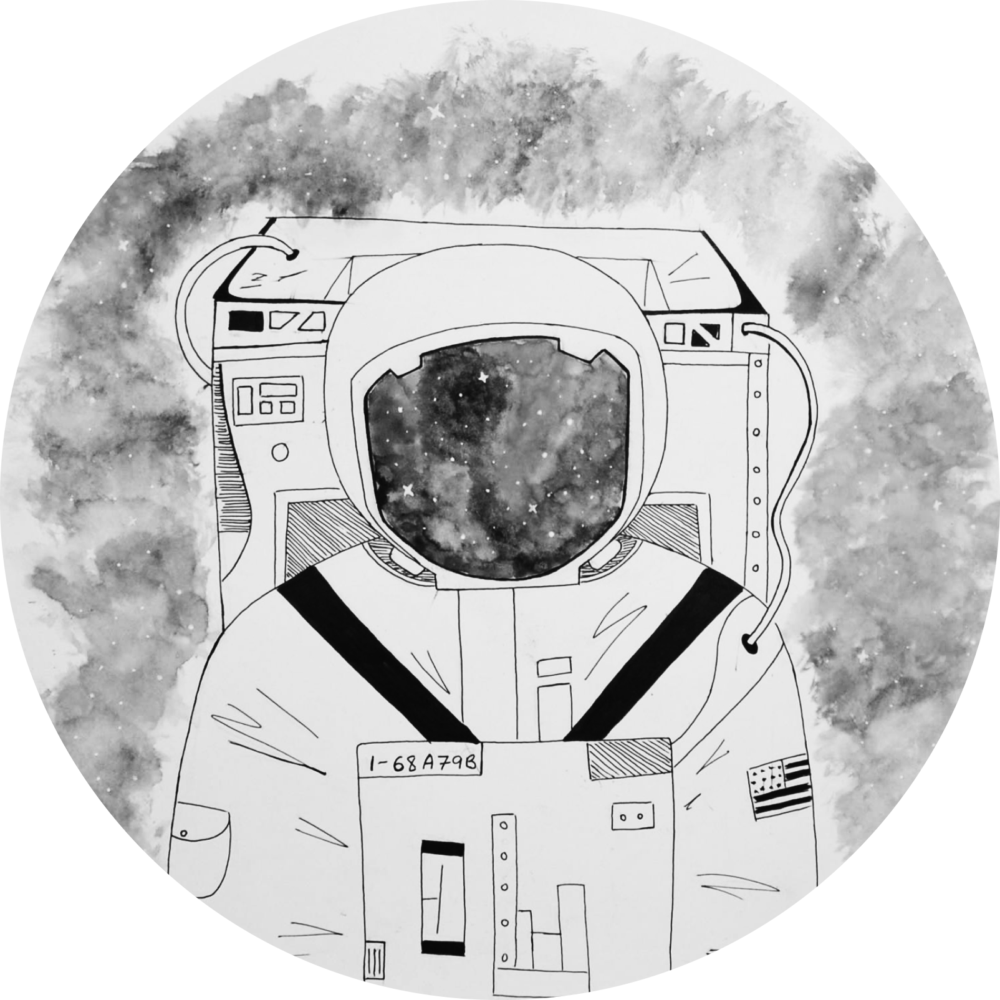

Design by Jolanta Kopelian
Ciao,
I’m Yuli, a future graphic designer! As for today, I’m a student, who passionately discovers all the magic of the communication design world. I study in the inspiring city of Milan and live in the romantic city of Como. Every day brings with it a new experience that inspires and build my inner world and my creative mind.
In this webpage, I present you the most precious thing to me – my works. This portfolio is a little piece of me. So, I truly hope you will enjoy it.
So far...
So far, I finished my first year of the bachelor of communication design in Politecnico di Milano’s school of design.
By the end of the year, I learned to work with programs such as Photoshop, Illustrator, InDesign, AfterEffects and worked with each one of them, creating books for print, illustrations, animated videos, sketches, websites design and so on.
Everywhere I go, I try to look at things from a different point of view and discover the blurred and hidden. Focusing on the little things makes you discover the most powerful, and important values in life.
“Politically Incorrect”
One of my recent, favorite projects was this book in the picture, named “Politically Incorrect”.
This book presents the phenomenon of hate crimes all over the world and analyzes the harm that has been done to each of the main groups, that undergo discrimination. It includes personal stories about different types of discrimination, supported by statistics and researches. While providing all this information, it also raises the question of the “Politically correct” intent compared to the actions in reality and calls people to educate their society and the next generation to tolerance.
About the project:
“All I can say is I am sensitive to discrimination on any basis because I have experienced that upset.”
- Ruth Bader Ginsburg
While I surely can relate to this quote, Can you? Were you ever a victim of “special” treatment from the society based on harsh discrimination without any rational reason? Or did you hurt somebody because he or she simply was caught abnormally in your sight?
Our world is not perfect, it moves slowly towards changes, which results are still hidden. Yet, we live in an “equality illusion”, fighting against each other about things which we should have left in the past (religion, race, gender etc.)
We tend to forget the human, sensitive side and treat each other with aversion, forgetting that we were all born equal.
Our society’s continuity depends on our willingness to challenge the status quo, and this is up to every one of us to decide.
“Darkness cannot drive out darkness; only light can do that. Hate cannot drive out hate; only love can do that.”
- Martin Luther King, Jr.

My Manifesto
I choose communication design as a profession because it is limitless. Un like architecture and product design, in which you have physicists limiting them, while I choose my own. There is no limit for the page, and if the paper is too small I will change its size.
I believe that good design creates something new, inspired from existing things and the past so that it would be easy to relate to it; But the best design works are the easiest to absorb.
We, designers, have some kind of provisions to provide a platform to social issues and reveal the reality to the public. Due to this, we should use it for the best and with responsibility.
Besides thet:
I always loved art. I remember myself as a child decorating everything all around. I also like the feelings that come with creation. In a kind of (what I consider as) art, there is the finished step, when you enjoy your creation. In cooking, for example, it takes usually few hours that results in a palatable experience. In design, every project takes a different amount of work and time. The longer it takes, the better it feels.
This is the main reason my hobbies include also cooking and baking, painting, jewellery making, lattice and the list goes on.
I truly love travel around the world and learn new cultures. Each place and every person has something to teach me.